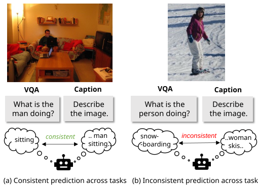
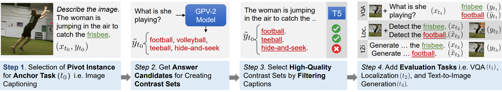
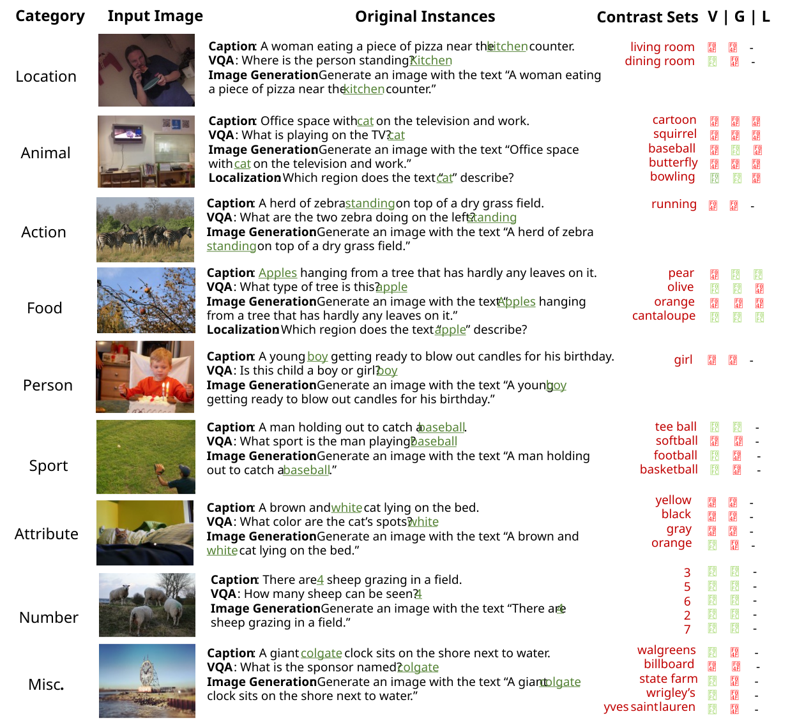
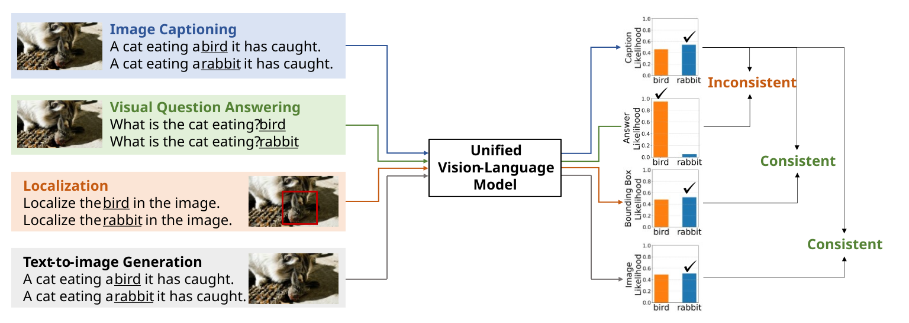
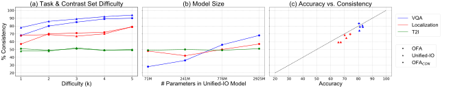

As general purpose vision models get increasingly effective at a wide set of tasks, it is imperative that they be consistent across the tasks they support. Inconsistent AI models are considered brittle and untrustworthy by human users and are more challenging to incorporate into larger systems that take dependencies on their outputs.
Measuring consistency between very heterogeneous tasks that might include outputs in different modalities is challenging since it is difficult to determine if the predictions are consistent with one another. As a solution, we introduce a benchmark dataset, CoCoCON, where we use contrast sets created by modifying test instances for multiple tasks in small but semantically meaningful ways to change the gold label, and outline metrics for measuring if a model is consistent by ranking the original and perturbed instances across tasks. We find that state-of-the-art systems suffer from a surprisingly high degree of inconsistent behavior across tasks, especially for more heterogeneous tasks.
Finally, we propose using a rank correlation-based auxiliary objective computed over large automatically created cross-task contrast sets to improve the multi-task consistency of large unified models, while retaining their original accuracy on downstream tasks.


Step-by-step demonstration of the automated pipeline for generating contrast sets for CoCoCON. Contrast sets generated from this pipeline for the validation split of COCO are subjected to manual filtering and then used to prepare the \dataset{} benchmark.

For each example, we show the relevant image (left), the ground truth caption, VQA question, or image generation prompt for the image with the perturbed concept in green (middle), the set of perturbations used to generate alternative answers and predictions from Unified-IO XL for VQA (V), image generation (G) and localization (L) (right columns). ✅ and ❌ indicate scenarios where the model predictions for captioning and the corresponding task for that particular contrast set are consistent and inconsistent respectively. ‘-’ denotes a lack of localization annotations for the given sample.

We use the unified models' likelihoods for each gold and contrast labels of each task to rank the outputs of anchor task (image captioning) and a target task (VQA, localization, text-to-image generation). If the gold outputs or contrast ouputs for both tasks are ranked higher, model is consistenct, otherwise it is inconsistent. With this method, we avoid having to compare hetergenous modalities e.g., a bounding box vs. a caption.
We evaluate pretrained models on the COCOCON benchmark. (a) % Consistency of Unified-IO XL and OFA-HUGE models for varying difficulty (k) and all tasks in COCOCON, (b) % consistency (k=1) values for different sizes of Unified-IO models and (c) comparison of % accuracy with % consistency (k=1) values for all sizes of OFA models and our OFACon model.

@article{maharana2024exposing,
author = {Maharana, Adyasha and Kamath, Amita and Clark, Christopher and Bansal, Mohit and Kembhavi, Aniruddha},
title = {Exposing and Addressing Cross-Task Inconsistency in Unified Vision-Language Models.},
journal = {TMLR},
year = {2024},
}